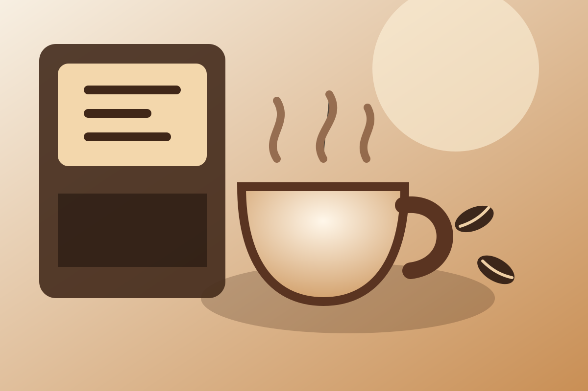

Меню
Отдельная страница с напитками, десертами и завтраками.
кофе • завтраки • городские встречи
Urban Bean готовит specialty-кофе, свежие завтраки и десерты. На сайте можно посмотреть меню и оставить предзаказ на удобное время.

о проекте
Сайт ориентирован на студентов, офисных сотрудников и жителей района, которым важно быстро узнать меню, часы работы и оставить предзаказ без лишних действий.
В интерфейсе используются крупные заголовки, контрастные кнопки, понятная навигация и адаптивная сетка для десктопа, планшета и смартфона.
что есть на сайте
Отдельная страница с напитками, десертами и завтраками.
Форма собирает имя, телефон, напиток и время самовывоза.
Иллюстрации, видео о кофе и плавные CSS-анимации.
мультимедиа
Встроенный ролик дополняет визуальный образ проекта и закрывает требование по мультимедийному контенту.
форма
После отправки заполненной формы пользователь переходит на отдельную страницу подтверждения.